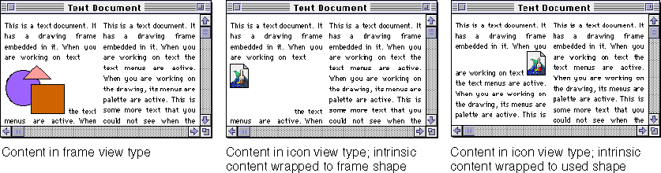
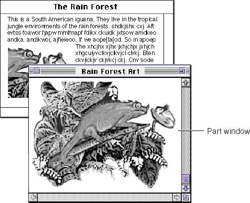
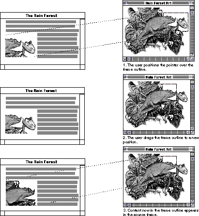
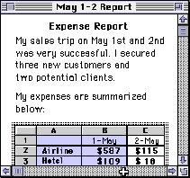
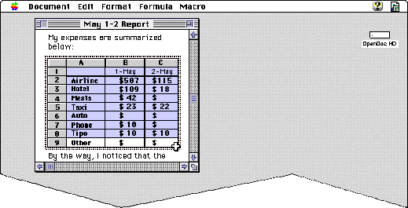
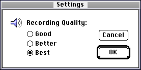

Changing Views
This section describes the behaviors and appearances you must support to allow users to create multiple views of a part and display a part in a part window.Changing the View Type of a Part
The user can change the view type of a part by using the View As pop-up menu in the Part Info dialog box (Figure 6-3, both the containing part and the embedded part can affect how the result appears to the user.The embedded part in this situation can either retain its original frame shape or negotiate for a smaller one. If the embedded part does not change its frame shape, it can either maintain its used shape as it was or make it smaller. The containing part, in turn, can either wrap its intrinsic content to the embedded part's frame shape or to the embedded part's used shape.
In displaying its icon, the embedded part should position the icon in the upper-left corner of its frame shape, so that the upper-left corner of the icon corresponds to the upper-left corner of the original frame. The embedded part should then either negotiate for a frame size that fits the icon or simply change its frame's used shape to fit the icon. The containing part can then wrap its intrinsic content close to the icon, as shown on the right side of Figure 13-12.
If the embedded part changes neither its frame shape nor its used shape, or if the containing part chooses not to adjust its intrinsic content to fit the embedded part's new used shape, the containing part needs to fill the portion of the frame that is unoccupied by the icon with background color, as shown in the center of Figure 13-12.
Figure 13-12 Changing an embedded frame to an icon

When a user changes an embedded part from icon view type to frame view type, the part should ask its containing part for the size it occupied when last in a frame view, or for the amount of space necessary to display all of its content. The containing part may grant the requested size or not.You can provide a user setting for controlling the wrapping of content to embedded parts' used shapes.
Viewing Embedded Parts in Part Windows
The user can open a part into its own part window in several ways, depending on the part's current view type.If your part is being viewed in a part window, open the window at an offset of 20-by-20 pixels from the upper-left corner of the frame that is the source of the part window. If the current script system is right-to-left rather than left-to-right, open the part window at an offset of 20-by-20 pixels from the upper-right corner of the source frame. Make the part window large enough to display all of your part's content, if possible. Make sure that the part window displays at least all of the content visible in the frame. Figure 13-13 shows the correct placement of a part window opened from a frame.
- When an embedded part is selected, the user can choose Open Selection from the Document menu or double-click its icon to open the part.
- When an embedded part is active, the user can choose the View in Window command to open the part into a window.
- When an embedded part is viewed as an icon, the user can double-click the icon to open the part into a part window (or bring its existing part window to the front). If the icon is a stationery icon, OpenDoc creates a new document and opens the window; this exception is consistent with stationery behavior.
Figure 13-13 Placement of part window

Use the name of the part as the title of the part window. If the part has no name, use the name of the category as the part name. If multiple views are opened, then you should include a colon and a number to indicate that the window displays a particular view. For example, the default title of an object-based graphics part viewed in a part window would be its category name, such as "Drawing." If there are multiple part windows displaying this part, give them unique names, such as "Drawing 1" and "Drawing 2." In Figure 13-13 the user has already assigned the name "Rain Forest Art" to the part.From a part window, the user can create separate documents by dragging portions of its content to the desktop, just as with document windows; see "Using Drag and Drop" for more information.
If a part is viewed in multiple frames, each of the multiple frames can have its own part window. If a user removes a frame while its part is viewed in a part window, the associated part window closes. If the user cuts and then pastes a frame that had also had a part window, the part window does not reappear. However, if a user drags and drops a part within a document while the part is also viewed in a part window, the part window does not close. The part window remains visible and in its current state unless the user drops the part onto another part, making the drop destination active and forcing the part window into the background. If the user moves a part between documents, the part window should close.
Repositioning Content in a Frame
When your part is viewed in a part window, your part editor should allow the user to adjust the portion of the part's content that is visible in its source frame (in the document window). Include a Show Frame Outline command in the Edit menu when your part has been opened into a part window. See the discussion of the Show Frame Outline command in "Edit Menu" for more information.When the user chooses Show Frame Outline from the Edit menu, display a border around the content currently displayed in the source frame; the border should look as described in the section "Frame Outline (in Part Window)".
When the user moves the pointer within the frame border outline, change the pointer to the open-hand pointer. When the user presses the mouse button, display the closed-hand pointer. When the user drags the pointer, move the border, tracking the pointer position until the user releases the mouse button. You should automatically scroll the document if necessary as the user moves the pointer. (For more information on autoscrolling, see "Automatic Scrolling".
Figure 13-14 Using a part window to reposition content in a frame

Multiple Views of a Part
You can display a single part in many frames, allowing users to manipulate the content in different ways. As one example, users may use multiple frames of the same part to create headers or footers on each page of a multiple-page document.When a single part has multiple frames, only one frame is active at a time. You need to update the content immediately in all frames when the user changes the content in one of the frames of a part. If the part contains a selection, you can display the selection appearance only in the active frame; the other frames show the background selection appearance.
If a user moves one of the multiple frames of an embedded part, just that frame moves. If a user deletes one of the frames of an embedded part, remove just that frame, not the entire part.
Design your implementation so that active frame border feedback appears around what the user perceives to be one entire frame of a part, not just one pane or portion of a frame. Likewise, the menu commands should work on all views of a part. For example, when you provide split views in a frame, or when a frame has an embedded scroll bar, the user should see the active frame border around the entire frame. See the section "Using Multiple Facets" for information on designing and creating split views in a frame. See the section "Splitting a Window" in Macintosh Human Interface Guidelines for more details on the behavior of split windows.
Your part editor determines how to allow users to create multiple views of a part in a document. There is no standard mechanism for this behavior because multiple views may be used for different purposes.
To support changing the view of content in your part's frames, you can implement a View menu (see "View Menu" shows a View menu that might be used in a three-dimensional rendering part. If your part supports combining types of views such as a top view of a wireframe, then separate such choices in the menu.
As the user creates new views, your part editor can display their names at the bottom of the View menu, separated by a line. If the user opens the frames into part windows and then chooses one of the frame's names from this menu, bring its window to the front. This menu gives the user access to the different views of a part, so you don't need to implement a separate Windows menu to manage the part windows of a part with multiple views.
If your part editor allows the user to display a part in more than one window, include a New View menu item at the bottom of the View menu, as shown in Figure 12-31 on page 554.
Automatic Scrolling
You should enable automatic scrolling of the contents of a window or of an embedded part that isn't completely visible in the window in at least the following four situations:Figure 13-15 A partially visible frame in a root part
- The user makes a selection in an embedded part whose frame is partially scrolled out of the containing part's display frame and then drag-moves the pointer outside the window. In this case, the embedded part should not scroll its content. Instead, it should ask its containing part to scroll so that the selected content is visible. For example, suppose that a spreadsheet frame is embedded inside a text document. The embedded frame might not be completely visible because the bottom of the frame would be obscured by the bottom of the window, as shown in Figure 13-15.

Figure 13-16 Scrolling to reveal content
- The user clicks inside a partially visible embedded frame and then drags to select some content that is not currently visible. In this case, the containing part or the window should scroll until the user stops selecting or until the bottom of the embedded part's frame is visible. Figure 13-16 shows this situation. Display at least one unit of overlap below the selection to provide the user appropriate context in the document. For example, if the user is scrolling in text, leave at least one line of text below the selection. In a spreadsheet part, one unit is a row or a column, depending on the direction of the scrolling.

For further information on automatic scrolling, see Macintosh Human Interface Guidelines.
- The user makes a selection and then extends it by moving the pointer outside the active part's content area. In this case, continue to scroll the content in the active frame until the user moves the pointer back inside
the frame.- The user selects content inside an embedded part's frame and then types or pastes new content when the frame is not completely visible in the window. In this case, the embedded part should ask the containing part to scroll the window until the insertion point is visible or until the bottom of the embedded part's frame is visible.
Displaying Part Information and Settings
The active part is responsible for handling the Selection Info command, as described in the sections "Edit Menu" shows a Part Info dialog box.You can define additional user properties for your parts and make them available through the Settings button of either the Part Info dialog box or Document Info dialog box (Figure 11-14
Figure 13-17 A Settings dialog box

Another example of part settings that your part editor may wish to provide is additional printing options related to the currently installed printing architecture. These options might give the user the choice of forcing printing at a certain DPI (dots per inch) setting regardless of the DPI capability of the current printer.The Settings dialog box is implemented through an OpenDoc extension. For more information, see "The Settings Extension"